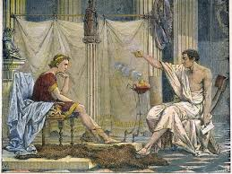
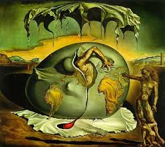

El Trabajo en la Filosofía de Aristóteles
Aristóteles, en su obra "Ética a Nicómaco", distingue entre diferentes tipos de actividades humanas. Para él, el trabajo (ergon) es una actividad que debe estar orientada hacia el bien común y la virtud. El trabajo, en su sentido más amplio, es una acción que contribuye al bienestar de la polis (sociedad) y permite al individuo alcanzar la felicidad (eudaimonia). Aristóteles valoraba el trabajo como una forma de llevar a cabo nuestra función humana en el mundo, pero sin caer en el materialismo ni el exceso.

Karl Marx y la Alienación en el Trabajo
Según Karl Marx, el trabajo es la esencia misma del ser humano, pero bajo el capitalismo se transforma en una fuente de alienación. En su obra "El Capital", Marx sostiene que el trabajador se aliena del producto de su trabajo, ya que no tiene control sobre él y solo recibe una parte del valor que produce. Para Marx, el trabajo debe ser liberador, no alienante, y solo con la abolición de la propiedad privada y la creación de una sociedad socialista el trabajo será verdaderamente humano.

Immanuel Kant y el Trabajo Moral
Para Immanuel Kant, el trabajo tiene una dimensión ética profunda. En su obra "Crítica de la Razón Práctica", Kant defiende la idea de que el trabajo debe ser una actividad racionalmente dirigida hacia el cumplimiento del deber moral. El trabajo, más allá de su carácter económico, es una manifestación de la libertad y la autonomía del individuo. El trabajo moral no solo busca la utilidad o la recompensa, sino que está orientado por principios éticos universales.

Heidegger: El Trabajo como Ser-en-el-Mundo
Martin Heidegger, en su obra "Ser y Tiempo", aborda el trabajo desde la perspectiva del "ser-en-el-mundo". Para él, el trabajo es una forma de estar en el mundo y de revelar el ser de las cosas. El trabajo no solo es un medio para satisfacer necesidades, sino que es una manera de relacionarse con el mundo y de dar sentido a nuestra existencia. Sin embargo, Heidegger también advierte que la industrialización del trabajo puede llevar a una deshumanización, en la que el hombre se convierte en un "máquina" más en el proceso productivo.

Trabajo y Acción en la Filosofía Existencialista
En la filosofía existencialista, figuras como Jean-Paul Sartre y Simone de Beauvoir ven el trabajo y la acción como medios a través de los cuales el individuo puede afirmarse y encontrar su autenticidad. Para Sartre, la libertad es central: "Estamos condenados a ser libres". El trabajo y la acción, entonces, son formas de crear significado en un mundo que no lo tiene de manera intrínseca. A través del trabajo, las personas se definen a sí mismas y asumen su responsabilidad en el mundo.